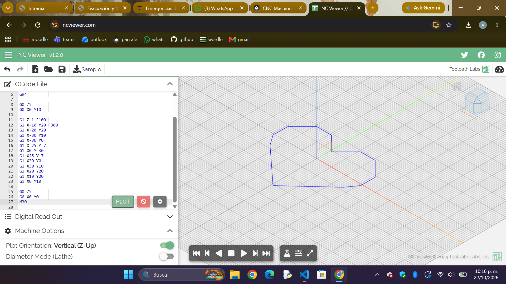

🦋 Reporte de Proyecto: Diseño y Maquinado CNC
📋 Información General
- Proyecto: Pieza de Mariposa en Maquinado CNC
- Tecnología de Fabricación: Fresadora Automática CNC
- Software Cam/Preparación: VCarve Pro
- Formato de Entrada Vectorial:
.DXF - Material: Espuma rosa
1. 💡 Introducción
El objetivo de este proyecto consistió en fabricar/esculpir una mariposa utilizando una fresadora automática CNC. A diferencia del corte láser, la CNC utiliza un proceso mediante una herramienta de corte giratoria (fresa), lo que requiere una preparación especial en los recorridos y profundidades.
Para este proyecto, partimos de un diseño vectorial en formato .DXF con la silueta y los detalles internos de las alas de la mariposa.
Práctica previa en NCViewer:
Como paso previo al maquinado real, realizamos una simulación digital en NCViewer para comprender la estructura del código G (G-code) y visualizar la trayectoria de la herramienta (toolpath). Esta práctica nos permitió verificar los movimientos de la fresadora CNC, corregir posibles colisiones y asegurar la correcta generación del programa antes de pasar a la máquina física.

2. 💻 Preparación del Archivo en VCarve Pro
Para adaptar el archivo vectorial a la máquina CNC, utilizamos el software VCarve Pro, siguiendo estos pasos clave:
- Importación del DXF: Cargamos el vector
.DXFde la mariposa en el espacio de trabajo. - Definición del Material (Setup):
- Configuración de las dimensiones del bloque (\(X, Y, Z\)).
- Establecimiento del punto de origen (\(Z\)-zero) en la superficie de la pieza.
- Acomodo y Anidado: Orientamos y posicionamos el vector para optimizar el área de corte y asegurar que la herramienta tenga espacio de maniobra libre.
- Asignación de Trayectorias de Herramienta:
- V-Carving Para los detalles internos y el grabado estético de las alas.
- Perfilado: Para el corte exterior del contorno de la mariposa.
- Generación de Puentes de Sujeción (Tabs): Añadimos pequeñas pestañas de soporte para evitar que la mariposa se suelte o salga proyectada al terminar de cortar el contorno.
3. ⚙️ Configuración del Maquinado
En VCarve Pro especificamos los parámetros de corte según la broca seleccionada:
- Tipo de fresa: Fresa recta (o V-Bit para detalles de grabado).
- Velocidad de Avance: Velocidad a la que se desplaza la máquina horizontalmente.
- Velocidad de Pasada: Velocidad de bajada de la broca en el eje \(Z\).
- Profundidad de Pasada: Cálculo de capas para no sobrecargar la fresa en un solo paso.
Nota técnica: Exportamos el archivo desde VCarve Pro transformándolo en el código de lenguaje de máquina (G-Code) compatible con la fresadora CNC.
4. 🛠️ Maquinado, Ajustes y Resultado Final
Una vez configurada la fresadora (fijación del material a la mesa de trabajo y calibración del punto cero \(X, Y, Z\)):
- Ejecución del G-Code: La CNC ejecutó primero los grabados interiores de las alas y posteriormente el perfilado exterior.
- Retiro de Pestañas (Tabs): Una vez concluido el ciclo de maquinado, retiramos manualmente las pestañas de soporte mediante una herramienta manual (cutter) y segueta.
- Resultado: Se obtuvo una pieza sólida de mariposa.
📊 Resumen del Proceso
| Etapa | Actividad Principal | Herramientas Utilizadas |
|---|---|---|
| 1. Diseño Vectorial | Creación y exportación de la mariposa en vector | Software CAD (.DXF) |
| 2. Cam & Layout | Importación, acomodo, asignación de toolpaths y tabs | VCarve Pro |
| 3. Post-Procesado | Generación del código de máquina de corte | Código G-Code |
| 4. Maquinado CNC | Fijación, calibración de origen y desbaste | Fresadora Automática CNC |
| 5. Acabado | Remoción de pestañas de sujeción y acabado final | Herramientas manuales |
FOTOS


🎯 Conclusión
El uso de VCarve Pro fue fundamental para traducir la idea vectorial de la mariposa en instrucciones de movimiento tridimensionales para la fresadora CNC. Comprender la diferencia entre trayectorias de perfilado, cajeras y la importancia de los tabs garantizó un proceso seguro, sin colisiones y con un acabado estético de gran calidad.